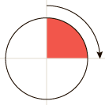
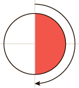
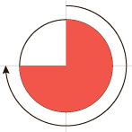
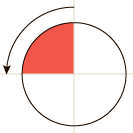

Угол
Задаёт угол наклона или поворота. Положительное значение отмеряется по часовой стрелке, отрицательное против часовой стрелки.
Синтаксис
Свойство: <угол>;Угол может задаваться в следующих единицах.
- В градусах. После значения пишется deg. Полный круг равен 360deg.
- В градах. Обозначается как grad. Полный круг равен 400grad,
- В радианах. Обозначается как rad. Полный круг равен 2π или примерно 6.2832rad.
- В поворотах. Обозначается как turn. Один круг равен одному повороту и пишется как 1turn.
Значения некоторых углов представлены в табл. 1.
|  | 90deg = 100grad = 0.25turn ≈ 1.5708rad |
|  | 180deg = 200grad = 0.5turn ≈ 3.1416rad |
|  | 270deg = 300grad = 0.75turn ≈ 4.7124rad |
|  | -90deg = -100grad = -0.25turn ≈ -1.5708rad |
Пример
<!DOCTYPE html>
<html>
<head>
<meta charset="utf-8">
<title>Градиент под углом</title>
<style>
body {
background: #b3dced;
background: linear-gradient(-45deg, #b3dced, #29b8e5 50%, #bce0ee);
}
</style>
</head>
<body>
<p>Внимание, запрашиваемая страница не найдена!</p>
</body>
</html>Спецификация
| Спецификация | Статус |
|---|---|
| CSS Values and Units Module Level 3 | Возможная рекомендация |
Браузеры
| Internet Explorer | Chrome | Opera | Safari | Firefox |
| 9 | 2 | 12 | 4 | 3.6 |
| Android | Firefox Mobile | Opera Mobile | Safari Mobile |
| 4 | 4 | 12 | 4 |